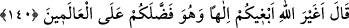

bunlardan olurdu. Zemahşerî ise bunların Mısır’da bulunan bir kabîle olduğunu
söylemiştir.
Onların durumlarını görünce “Ey Mûsâ! (bak) bunların nasıl” taptıkları “tanrıları
var, bize de öyle bir tanrı” tapacağımız bir put “yap.” dediler.”
Gördükleri kimselerin putları, öküz heykelleri halinde idi. İsrâiloğulları’nın bu
istekleri, buzağıyı tanrı edinmelerinin bir öncüsü olmuştur.
Mûsâ (a.s.) kavmini mutlak bir cehaletle suçlayarak: “Siz gerçekten cahil bir
toplumsunuz.” dedi.” Çünkü bunca büyük ayet ve mucizeleri gördükten sonra böyle bir
davranışta bulunmaları akla uzak düştüğü için neyin câhili oldukları zikredilmemiştir.
139. Şüphesiz bunların içinde bulundukları (din) yıkılmıştır, yapmakta oldukları da
bâtıldır.
“Şunların” bu putlara tapan kavmin “içinde bulundukları,” bâtıl din “yıkılmıştır”
paramparça olacak ve helak edilecektir. Yani Allah Teâlâ, yakın zamanda onların dinini
yerle bir edecek, putlarını devirecek ve paramparça edecektir. “ve” her ne kadar
putlara tapmakdan maksadları Allah’a yaklaşmak idiyse de onlara ibâdet hususunda
“yaptıkları şeyler boşa çıkmıştır.” Çünkü putlara tapmak, mahza küfürdür.
140. Musa dedi ki: Allah sizi âlemlere üstün kılmışken ben size Allah’tan başka
bir tanrı mı arayayım?
Mûsâ (a.s.) devamla şöyle dedi: “Allah sizi âlemlere üstün yapmış” Allah Teâlâ
size, başkalarına vermediği husûsi nimetler vermiş “iken size Allah’tan başka” ibadete
layık “bir tanrı mı arayayım?” Yani, asla aramayacağım. Burada reddedilen arananın
Allah’dan başkası olmasıdır. Allah’ın başkalarına vermeyip onlara verdiği hususi
nimetler, karşı konulmaz ayetler ve apaçık mucizelerdir. Bu gibi şeyler, âlemlerden hiç
kimseye verilmemiştir.
Haddâdî demiştir ki: “O, sizi âlemlere üstün kıldı” sözünün mânâsı: “Allah sizi,
köle olup zillete düştükten sonra zamanınızdaki Kıptîler’e ve başkalarına üstün kıldı.”
demektir.
Burada onların kötü davranışlarına dikkat çekilmektedir. Çünkü onlar, benzerleri
içinde hak etmedikleri halde sırf Allah’ın lütfundan olarak kendilerine husûsi nimet ve
ihsanlarda bulunulmasına karşılık en değersiz yaratıklara yönelip onları Allah’a ortak
koşmuşlardır.